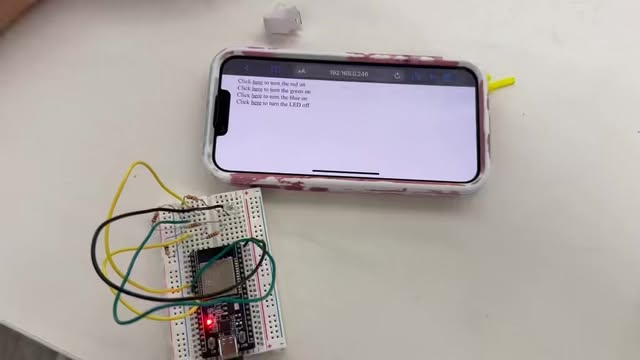
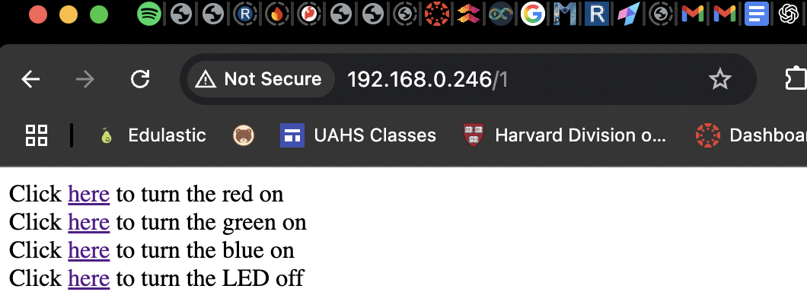
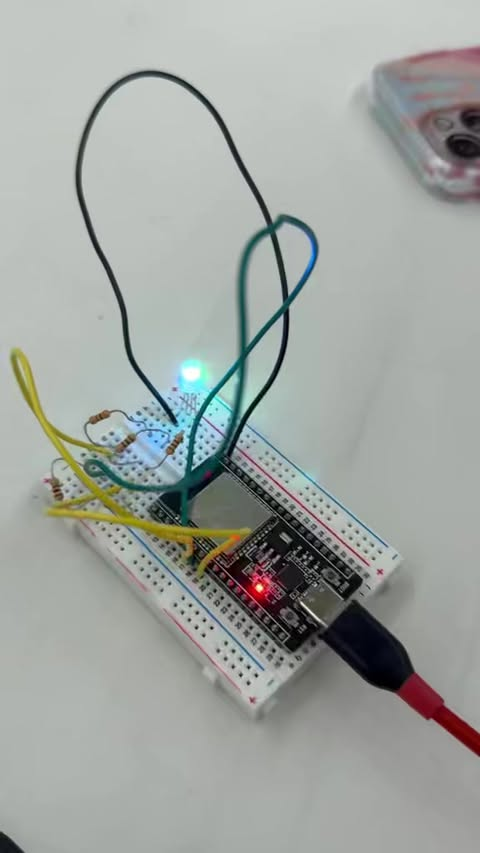
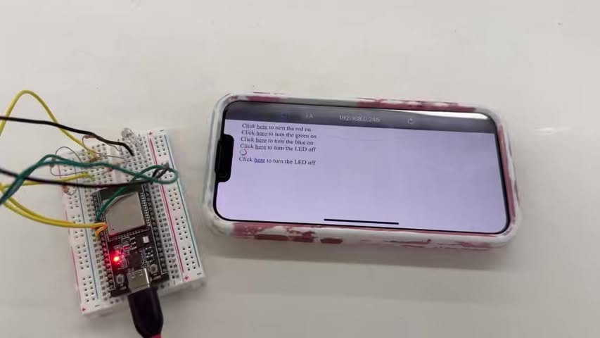
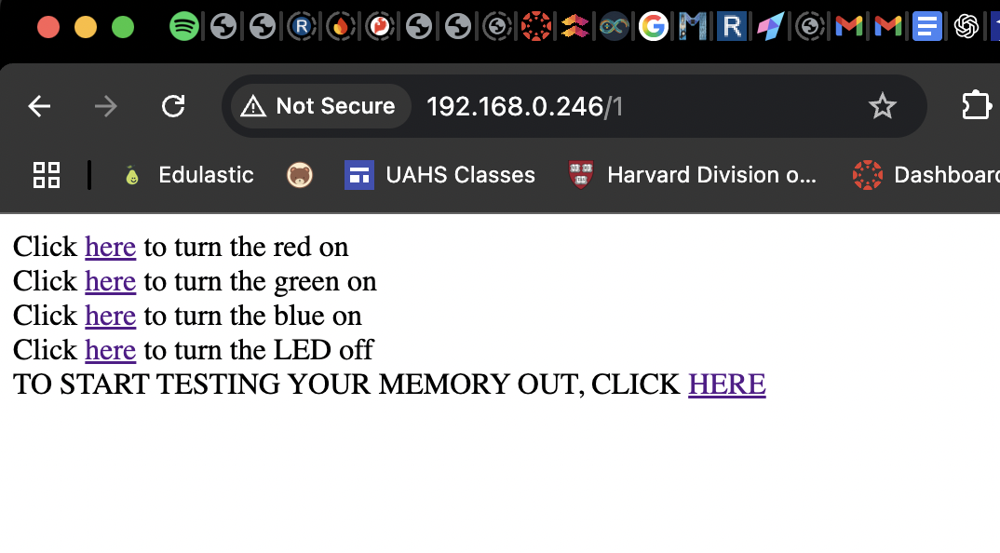
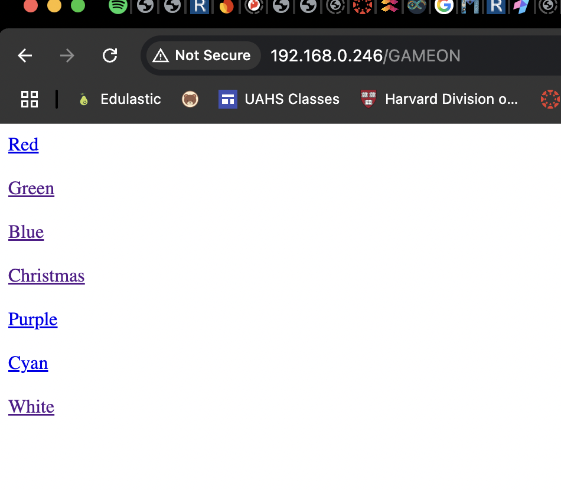

<div class="textcontainer">
<p class="margin"> </p>
<h3>Week 9: Radio, WiFi, Bluetooth (IoT)</h3>
<p class="margin"> </p>
<p class="margin"> </p>
<h4>RGB ESP32 LAN Memory Game</h4>
<p class = "margin"></p>
This project started as a simple RGB light controller using an ESP32 connected to the MAKERSPACE Wi-Fi network. The goal was to be able to control the light from any device on the same local network by hosting a LAN web server on the ESP32.
<p class = "margin"></p>
<p></p>
<p class = "margin"></p>
Eventually we figured out how to make the light display different brightness levels of colors, which is where we got the idea of possibly using a color picker so that the user could pick something on the scale then it would be displayed. Unfortunately we could not get it to work, as explained later on.
<p class = "margin"></p>
<p class = "margin"></p>
Over time, the project evolved into something much more interactive and chaotic—in the best way. We ended up building a memory-based light game (with a twist of Russian roulette) that let users challenge their brains and their luck. Spoiler: if you win, Bobby gives you a high five.
<p class = "margin"></p>
<h4>Setup & Features</h4>
<p class = "margin"></p>
1. Initial Setup: RGB LED Control via LAN
We wired up the RGB LED to the ESP32 using GPIO pins (Red: 32, Green: 33, Blue: 25).
<p class = "margin"></p>
<p class = "margin"></p>
Hosted a web server on port 80 that rendered clickable links like:
<p class = "margin"></p>
<p></p>
<p class = "margin"></p>
Each click on a color would increment its intensity by 51, up to a maximum of 255, then reset to 0 on the 6th click.
<p class = "margin"></p>
<p class = "margin"></p>
Colors could stack — clicking red and blue would give you purple, for instance. Below is an example of blue stacked on green which in our website we called cyan.
<p class = "margin"></p>
<p></p>
<p class = "margin"></p>
We immediately thought of a color picker, where a use could potentially use a color scale and pick a shade they would like displayed and the light would turn that shade. Unfortunately it did not work because even though you could pick colors on the colorpicker, the picker had shades that would go towards black, whilst the light could only get dimmer, not have duller tones. Below if you can see the rainbow circle, clicking on it would project the color picker (second image) where you could drag the circle to a shade you wanted.
<p class = "margin"></p>
<p></p>
<p class = "margin"></p>
For example this shade shown above would never be able to be replicated since the darker black thats combined with the blue in the color picker would just be the absence of light in the rgb light (so it would just look like a dimmer version of a still very bright shade).
<p class = "margin"></p>
<h4>2. Custom Colors and Troubleshooting</h4>
<p class = "margin"></p>
So going back to just working with incremented and stackable colors, we tried out several combos. One notable moment was when we created a color we called "Christmas" (red + green). Unfortunately, the two colors didn’t mix well visually and looked more like a christmas tree than what we think was supposed to be an orange glow.
<p class = "margin"></p>
<iframe width="560" height="315" src="https://www.youtube.com/embed/_0CWUb0gEqE" title="YouTube video player" frameborder="0" allow="accelerometer; autoplay; clipboard-write; encrypted-media; gyroscope; picture-in-picture; web-share" referrerpolicy="strict-origin-when-cross-origin" allowfullscreen></iframe>
<h4> Memory Game: The Glow-Up (Literally)</h4>
<p class = "margin"></p>
After getting the RGB controls working, we decided to turn the project into a memory game.
The game flashes a sequence of colors (randomized), and the player must repeat the sequence.
The sequence grows by one each round, up to a maximum of 20 levels.
If you repeat the pattern correctly, the game continues. If not, you're out.
If you make it to the end, the ESP32 displays a win message and Bobby gives you a well-deserved high five. The image below shows what the user's point of view would be on the webpage (before and after clicking HERE to start memory game).
<p class = "margin"></p>
<p></p>
<p></p>
<iframe width="560" height="315" src="https://www.youtube.com/embed/ukcdUJVTWFU" title="YouTube video player" frameborder="0" allow="accelerometer; autoplay; clipboard-write; encrypted-media; gyroscope; picture-in-picture; web-share" referrerpolicy="strict-origin-when-cross-origin" allowfullscreen></iframe>
<p class = "margin"></p>
For the code we settled on creating a ColorGame class where colors could be displayed (with methods so it would save space) and randomized. We made it so there was a reset method where after you lost the game or clicked in to start the game, an array of numbers 0-7 (each corresponding with a color) would be randomly generated. The game would then display one the first round, two the second, and so on. We would take in the user's input (clicks) and compare it to the array and if it was correct the program would continue.
<p class = "margin"></p>
<p class = "margin"></p>
❗ Unexpected Feature: Russian Roulette Round
We struggled a lot getting the first round of the memory sequence to display properly. Instead of fixing it with more debugging, we embraced the chaos and made the first round a "Russian roulette" round — one random color flashes, and you just hope you guess it right.
<p class = "margin"></p>
<h4> ⚙️ Tech Breakdown </h4>
<p class = "margin"></p>
ESP32 Web Server: Hosted on port 80 using WiFiServer.
<p class = "margin"></p>
<p class = "margin"></p>
Memory Array: We used an array of length 20 to store the color sequence for the game.
<p class = "margin"></p>
<p class = "margin"></p>
LAN Access: Any device connected to the MAKERSPACE Wi-Fi could access the ESP32 through its local IP.
<p class = "margin"></p>
<h4> Challenges </h4>
<p class = "margin"></p>
Debugging the memory game logic and round transitions took a lot of trial and error.Color mixing on RGB LEDs was also difficult, especially when different shades of colors look almost identical when projected as light. Another challenge was timing the light displays and reading user inputs through basic HTTP GET requests.
<p class = "margin"></p>
<iframe width="560" height="315" src="https://www.youtube.com/embed/SgpgoZnQ_Pg?si=OMblCbhFgXtqqyMN" title="YouTube video player" frameborder="0" allow="accelerometer; autoplay; clipboard-write; encrypted-media; gyroscope; picture-in-picture; web-share" referrerpolicy="strict-origin-when-cross-origin" allowfullscreen></iframe>
<h4> Next Steps (if we had more time -- I will probably try to work these out) </h4>
<p class = "margin"></p>
Add sound or vibration feedback for wrong answers.
Make the web interface more stylish (buttons instead of hyperlinks).
Add a scoreboard to track highest streaks across users.
Improve timing and pacing of the light displays using millis() instead of delay().
<p class = "margin"></p>
<p class = "margin"></p>
Overall I learned a lot in the process of making this, and the game turned out to have a lot of quirks after actually making it!
And yes, Bobby really does give high fives if you win.
<p class = "margin"></p>
<pre><code>
#include <WiFi.h>
#define PIN_RED 32 // GPIO23
#define PIN_GREEN 33 // GPIO22
#define PIN_BLUE 25 // GPIO21
WiFiServer server(80);
const char* ssid = "MAKERSPACE";
const char* password = "12345678";
const int freq = 5000;
const int resolution = 8;
int memory[20];
int rVal = 0;
int gVal = 0;
int bVal = 0;
bool gameDuring;
class ColorGame {
bool gameStart;
int round;
int turn;
int openInterval;
int closedInterval;
public:
ColorGame(int oI, int cI) {
gameDuring = false;
round = 0;
turn = 0;
openInterval = oI;
closedInterval = cI;
}
//variables go here
//I want to go through the array and check each one so that unless the thing doesn't match it kicks it out
void RedOn() {
ledcWrite(PIN_RED, 255);
ledcWrite(PIN_GREEN, 0);
ledcWrite(PIN_BLUE, 0);
}
void GreenOn() {
ledcWrite(PIN_RED, 0);
ledcWrite(PIN_GREEN, 255);
ledcWrite(PIN_BLUE, 0);
}
void BlueOn() {
ledcWrite(PIN_RED, 0);
ledcWrite(PIN_GREEN, 0);
ledcWrite(PIN_BLUE, 255);
}
void ChristmasOn() {
ledcWrite(PIN_RED, 255);
ledcWrite(PIN_GREEN, 255);
ledcWrite(PIN_BLUE, 0);
}
void CyanOn() {
ledcWrite(PIN_RED, 0);
ledcWrite(PIN_GREEN, 255);
ledcWrite(PIN_BLUE, 255);
}
void PurpleOn() {
ledcWrite(PIN_RED, 255);
ledcWrite(PIN_GREEN, 0);
ledcWrite(PIN_BLUE, 255);
}
void WhiteOn() {
ledcWrite(PIN_RED, 255);
ledcWrite(PIN_GREEN, 255);
ledcWrite(PIN_BLUE, 255);
}
void blank() {
ledcWrite(PIN_RED, 0);
ledcWrite(PIN_GREEN, 0);
ledcWrite(PIN_BLUE, 0);
}
void gameRestart() {
blank();
gameStart = true;
round = 1;
turn = 0;
for(int i = 0; i<20; i++)
{
memory[i] = random(0,7);
//this is gonna make all the values ahead of time and set up the round
}
delay(500);
displayColor(0);
delay(openInterval);
blank();
delay(closedInterval);
}
void displayColor(int x) {
blank();
if (x == 0) {RedOn();}
else if (x == 1) {GreenOn();}
else if (x == 2) {BlueOn();}
else if (x == 3) {ChristmasOn();}
else if (x == 4) {PurpleOn();}
else if (x == 5) {CyanOn();}
else if (x == 6) {WhiteOn();}
}
int getRound() {return round;}
int getTurn() {return turn;}
void play(int guess, NetworkClient client) {
Serial.print(guess);
if (memory[turn] == guess) {
turn += 1;
if (turn == round && round < 3) {
turn = 0;
round += 1;
showRound();
}
if (round == 3 && turn == round) {
client.println("HTTP/1.1 200 OK");
client.println("Content-type:text/html");
client.println();
client.println("You won! (get a high five from Bobby!!!)");
delay(2500);
gameDuring = false;
round = 0;
turn = 0;
}
}
else {
gameDuring = false;
round = 0;
turn = 0;
}
}
void showRound() {
for (int i = 0; i < round; i++) {
Serial.println(memory[i]);
displayColor(memory[i]);
delay(openInterval);
blank();
delay(closedInterval);
}
}
int* getMemory() {
return memory;
}
};
ColorGame newGame(1000, 500);
void setup() {
gameDuring = false;
pinMode(PIN_RED, OUTPUT);
pinMode(PIN_GREEN, OUTPUT);
pinMode(PIN_BLUE, OUTPUT);
ledcAttach(PIN_RED, freq, resolution);
ledcAttach(PIN_GREEN, freq, resolution);
ledcAttach(PIN_BLUE, freq, resolution);
Serial.begin(115200);
Serial.println();
Serial.println();
Serial.print("Connecting to ");
Serial.println(ssid);
WiFi.begin(ssid, password);
while (WiFi.status() != WL_CONNECTED) {
delay(500);
Serial.print(".");
}
Serial.println("");
Serial.println("WiFi connected.");
Serial.println("IP address: ");
Serial.println(WiFi.localIP());
server.begin();
}
void loop() {
NetworkClient client = server.accept();
if (client) {
Serial.println("New Client.");
String currentLine = "";
while (client.connected()) {
if (client.available()) {
char c = client.read();
//Serial.write(c);
if (c == '\n') {
if (currentLine.length() == 0) {
client.println("HTTP/1.1 200 OK");
client.println("Content-type:text/html");
client.println();
if (!gameDuring) {
client.print("Click <a href=\"/R\">here</a> to turn the red on<br>");
client.print("Click <a href=\"/G\">here</a> to turn the green on<br>");
client.print("Click <a href=\"/B\">here</a> to turn the blue on<br>");
client.print("Click <a href=\"/L\">here</a> to turn the LED off<br>");
client.print("TO START TESTING YOUR MEMORY OUT, CLICK <a href=\"/GAMEON\">HERE</a> <br>");
}
else {
client.print("");
client.print("<a href=\"/0\">Red</a> <br><br>");
client.print("<a href=\"/1\">Green</a> <br><br>");
client.print("<a href=\"/2\">Blue</a> <br><br>");
client.print("<a href=\"/3\">Christmas</a> <br><br>");
client.print("<a href=\"/4\">Purple</a> <br><br>");
client.print("<a href=\"/5\">Cyan</a> <br><br>");
client.print("<a href=\"/6\">White</a> <br><br>");
}
client.println();
break;
} else {
currentLine = "";
}
} else if (c != '\r') {
currentLine += c;
}
if(gameDuring == true)
{
//this is just gonna run while gameDduring is true
if (newGame.getRound() == 0) {
newGame.gameRestart();
}
//getTurn(position) will get
if (currentLine.endsWith("GET /0")) {newGame.play(0, client);}
if (currentLine.endsWith("GET /1")) {newGame.play(1, client);}
if (currentLine.endsWith("GET /2")) {newGame.play(2, client);}
if (currentLine.endsWith("GET /3")) {newGame.play(3, client);}
if (currentLine.endsWith("GET /4")) {newGame.play(4, client);}
if (currentLine.endsWith("GET /5")) {newGame.play(5, client);}
if (currentLine.endsWith("GET /6")) {newGame.play(6, client);}
}
else {
if (currentLine.endsWith("GET /R")) {
rVal += 51;
if (rVal > 255) {rVal = 0;}
}
else if (currentLine.endsWith("GET /G")) {
gVal += 51;
if (gVal > 255) {gVal = 0;}
}
else if (currentLine.endsWith("GET /B")) {
bVal += 51;
if (bVal > 255) {bVal = 0;}
}
else if (currentLine.endsWith("GET /L")) {
rVal = 0;
gVal = 0;
bVal = 0;
}
else if (currentLine.endsWith("GET /GAMEON"))
{
//start game
gameDuring = true;
}
ledcWrite(PIN_RED, rVal);
ledcWrite(PIN_GREEN, gVal);
ledcWrite(PIN_BLUE, bVal);
}
}
}
client.stop();
Serial.println("Client Disconnected.");
}
}
<code><pre>
</div>